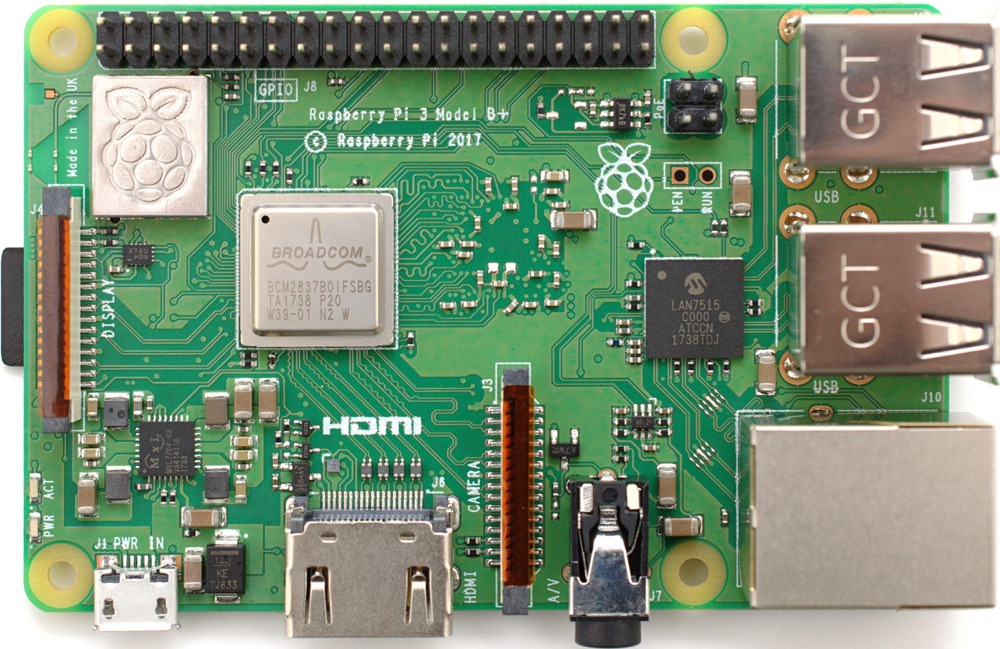

The Autopsy Report · Device #063
The Raspberry Pi 3 Range
Three boards, one generation: the 3B that brought Wi-Fi to the Pi, the tiny 3A+, and the faster 3B+. Same family, different silicon — and the differences matter. Family history · 3B+ launch report
What is this thing?
The Pi 3 range is the third generation of the Raspberry Pi single-board computer, and the generation that made the Pi a wireless device. Three boards share the name: the 3B (February 2016) — the first Pi with on-board Wi-Fi and Bluetooth, and the first 64-bit Pi; the 3B+ (March 2018) — faster processor, dual-band Wi-Fi, and a Power-over-Ethernet header; and the 3A+ (late 2018) — the same faster chip in a smaller, cheaper board with half the memory. Family history · 3B+ launch report · 3A+ official specs
Our representative board is the 3B+ — the one in the photo. It's the most capable of the three and the one whose launch was best documented in the press. But the three boards are not interchangeable, and we don't pretend they are: chip names and specs below are labeled per-board. Contemporary 3B+ report
Not yet on our bench
Same honesty as the family page: no Pi 3 has sat on our bench yet. No disassembly, no boot log, no measurements, no original-unit photography. Everything here comes from Raspberry Pi's own documents, launch reporting, and chip datasheets. When a 3B+ lands on the bench, this page gets its second act.
A short history
- February 2016The Pi 3 Model B launches: quad-core 64-bit BCM2837 at 1.2 GHz, 1 GB of RAM, and — the headline — 2.4 GHz Wi-Fi and Bluetooth 4.1 on the board for the first time. Same $35. Wikipedia · Official specs
- March 14, 2018The Pi 3 Model B+ launches on Pi Day, still $35: the processor steps up to 1.4 GHz (BCM2837B0), wireless moves to a dual-band 802.11ac part, Bluetooth goes to 4.2 with BLE, Ethernet is nominally gigabit, and a 4-pin header appears for Power-over-Ethernet. CNX Software · HEXUS
- Late 2018The Pi 3 Model A+ arrives: the B+ silicon in the smaller A+ form factor — 512 MB of RAM, a single USB port, same $25-ish cut-down philosophy as the original Model A. Official specs
- June 2019The Pi 4 supersedes the whole range — but the 3B+ stays in production as the budget pick, because $35 boards don't retire, they just get cheaper jobs. Wikipedia
The outside
The 3B+ looks like the 3B at a glance — same 85 × 56 mm board, same port layout: micro-USB power, HDMI, audio/video jack, four USB 2.0 ports, Ethernet, micro-SD underneath, 40-pin GPIO header. Look closer and the differences show: the wireless can is a different shape with a new antenna design (a cavity-backed antenna the launch coverage called out), and there's a small 4-pin header near the edge for Power-over-Ethernet. The 3A+, by contrast, is visibly smaller — one USB port instead of four, no Ethernet jack at all. CNX Software · 3A+ official specs

The board
The 3B+'s headline chip is the BCM2837B0 — the same architecture as the 3B's BCM2837, clocked up to 1.4 GHz, with better thermal management (a metal heat-spreader on the package, which is why the chip looks different in photos). Wireless moves to the CYW43455, a dual-band 802.11ac Wi-Fi plus Bluetooth 4.2/BLE combo part with a public datasheet — a rarity in this price class, and genuinely useful if you want to know what the radio is. Memory stays 1 GB of LPDDR2 on the B models; the 3A+ halves it to 512 MB. The "gigabit" Ethernet on the 3B+ runs through the board's USB 2.0 hub chip internally, so it tops out around 300 Mbps in practice — honest gigabit it is not, and the launch coverage said so at the time. CNX Software · CYW43455 datasheet (PDF)
Under the microscope: the chips
Per-board, because the three boards differ. Confirmed means a primary source — Raspberry Pi's documents, a vendor datasheet, or contemporary launch reporting quoting the specs — says so. Likely means public hardware records agree but we haven't traced it to a primary source.
| Chip | What it does | How we know | Dig deeper |
|---|---|---|---|
| Broadcom BCM2837B0 quad-core ARM Cortex-A53 @ 1.4 GHz — 3B+ and 3A+ |
The main processor on the two newer boards; the 3B uses the BCM2837 at 1.2 GHz. | Confirmed Launch reporting and Raspberry Pi's official 3A+ specifications. | CNX Software |
| Cypress CYW43455 3B+ and 3A+ wireless |
Dual-band 802.11ac Wi-Fi plus Bluetooth 4.2/BLE combo radio. | Confirmed Launch reporting names the part; the vendor datasheet is public. | Datasheet (PDF) |
| 1 GB LPDDR2 (3B, 3B+) · 512 MB LPDDR2 (3A+) | Working memory — halved on the cut-down A+ board. | Confirmed Raspberry Pi's official specifications. | 3A+ official specs |
| USB-hub Ethernet controller 3B+ "gigabit" port |
Runs the USB ports and the Ethernet jack; the gigabit PHY talks through USB 2.0, capping real throughput near 300 Mbps. | Likely Public hardware records name the part; launch reporting documents the USB-2.0 bottleneck. We could not find a trustworthy public datasheet for the exact chip, so we don't name it here. | CNX Software |
| PoE header 3B+ only, 4-pin |
Lets an add-on board feed the Pi power over its Ethernet cable. | Confirmed Launch reporting; present on the 3B+, absent on the 3B and 3A+. | HEXUS |
The government's file
The 3B+ — our representative — carries its own filing: FCC ID 2ABCB-RPI3BP. The public UL test report (serial no. UL-RPT-RP11913492-2016A, issued March 6, 2018) identifies the equipment under test as the Raspberry Pi 3 Model B+, manufacturer Raspberry Pi (Trading) Ltd, with Bluetooth and 2.4/5 GHz WLAN and an integral antenna, tested against FCC Parts 15.207, 15.209(a), and 15.247. Independent compliance documents corroborate the ID mapping: 3B = 2ABCB-RPI32, 3B+ = 2ABCB-RPI3BP. The 3B's filing belongs to the 3B alone — we don't apply either board's paperwork to the other, or to the 3A+, whose own filing is a separate matter. 3B+ FCC test report (PDF)
Listening, not knocking
Our posture, as always: we listen, we don't knock. The Pi 3 range is among the best-documented boards in existence — Raspberry Pi publishes board schematics and hardware documentation on its official documentation site, and the serial console on the GPIO header is a documented developer interface, not a secret. When a 3B+ reaches our bench, the plan is a read-only boot-log capture and published measurements — listening only. No bypasses, no extractions, no firmware redistribution; there's nothing locked here to defeat. Official docs: schematics & drawings
What we didn't do
- No bench work at all yet: no disassembly, no boot log, no power measurements, no original-unit photos.
- We did not verify the 3B+'s wireless chip marking against the CYW43455 datasheet — that's bench work.
- We did not measure the Ethernet throughput claim or the PoE header — launch reporting did, and we cite it.
- Nothing here touches credentials, keys, or locked functionality.
By the numbers
- Range: Raspberry Pi 3 — 3B (Feb 2016), 3B+ (Mar 2018), 3A+ (late 2018) Family history
- Representative: 3B+ — BCM2837B0 @ 1.4 GHz, 1 GB LPDDR2, CYW43455 dual-band ac Wi-Fi + BT 4.2/BLE, 4× USB 2.0, "gigabit" Ethernet (≈300 Mbps real), PoE header, $35 CNX Software
- 3A+ differences: same SoC, 512 MB RAM, 1× USB, no Ethernet, smaller board 3A+ official specs
- 3B differences: BCM2837 @ 1.2 GHz, single-band 2.4 GHz Wi-Fi + BT 4.1, 10/100 Ethernet, no PoE header 3B official specs
- Storage: micro-SD on all three — no onboard flash to wear out 3A+ official specs
- FCC (3B+): 2ABCB-RPI3BP — UL test report issued March 6, 2018 FCC test report (PDF)
What awaits the bench
- A 3B+ of our own — revision, photos, measurements, and a read-only boot log.
- Chip-marking verification: BCM2837B0 and CYW43455 read off a real board.
- Thermal behavior of the B0 package under sustained load — the heat-spreader was a real change, worth measuring.
- A side-by-side 3B vs 3B+ vs 3A+ photo set, so the physical differences are visible, not just described.
Words to know
Every term this page uses, in plain English. No prior knowledge required.
- System on a chip (SoC)
- Processor, graphics, and more on one piece of silicon. The BCM2837B0 is the 3B+'s SoC.
- 802.11ac
- A Wi-Fi generation that adds the 5 GHz band and higher speeds. The 3B+'s big wireless upgrade over the 3B's 802.11n.
- Bluetooth Low Energy (BLE)
- A power-sipping Bluetooth mode for sensors and small gadgets. The 3B+ added it; the 3B lacks it.
- Power over Ethernet (PoE)
- Power and data over one network cable. The 3B+ has a header for an optional PoE add-on board.
- Heat-spreader
- A metal plate on top of a chip package that spreads heat out so the chip can run faster without cooking itself.
- micro-SD card
- The Pi's storage — the operating system lives on this removable card.
- FCC ID
- The FCC's approval ID for a wireless product. One board's filing covers one board — we don't share them across models.
- Serial console
- A text interface for watching a board boot, over a few wires. Documented and open on the Pi — listening, not knocking.
Sources & confidence
- 3B+ launch specs (1.4 GHz, CYW43455, PoE header, USB-2.0-limited Ethernet, $35): contemporary launch reporting. High confidence.
- 3A+ specs (BCM2837B0, 512 MB, dual-band wireless): Raspberry Pi's official product page. High confidence.
- 3B specs and dates: Raspberry Pi's official page and the family history. High confidence.
- CYW43455 capabilities: the vendor's public datasheet. High confidence.
- Exact USB/Ethernet controller part number on the 3B+: not pinned to a trustworthy primary source — deliberately unnamed here.
- Anything not listed here is unknown until the bench says otherwise. We'll say so, out loud, when that's the case.
The device photo is a freely licensed stock photo, credited in its caption — not a photo of our own unit, because we don't have one yet.
Legal note. BareBoard is an educational project. Everything on this page is our own writing based on public documents — our summaries, our analysis. We don't publish, host, or distribute firmware, keys, passwords, or credentials. Product names and trademarks belong to their respective owners and appear here only to identify the hardware. If you believe anything here infringes your rights, contact us and we'll address it promptly.